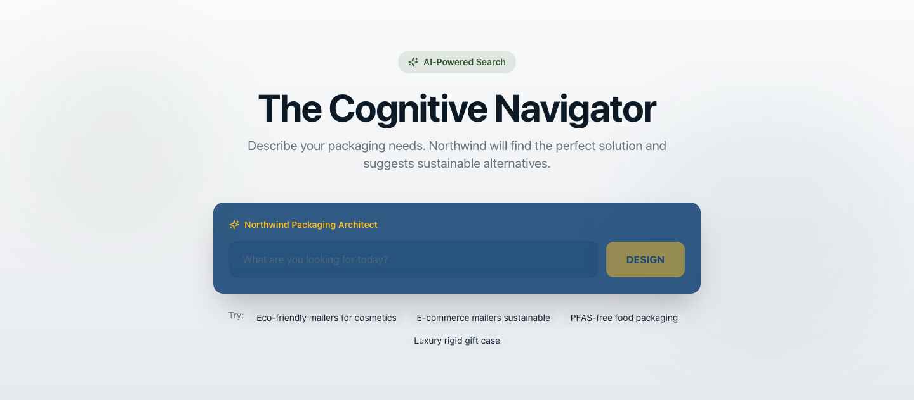
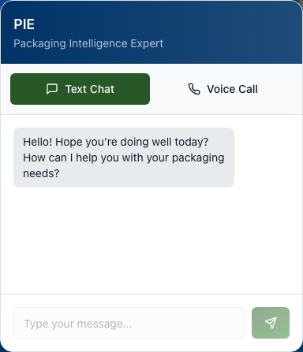
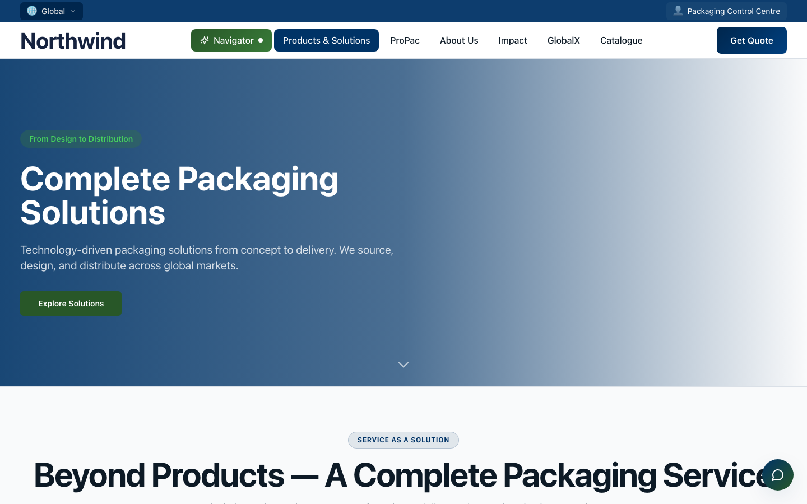
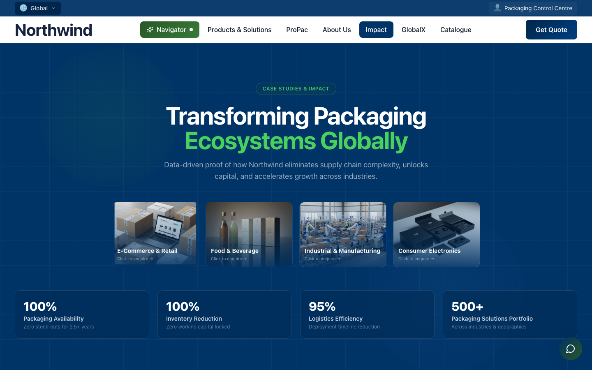

Vibe-coded web platform
AI-Native Corporate Website & PIE Agent
The company’s global website, vibe-coded in Lovable, with an AI search navigator and PIE, a chat and voice agent on Retell AI, running on Supabase and Vercel.
How it was built
- Vibe-coded in Lovable: every page, the navigation and the Cognitive Navigator, where visitors describe a packaging need in plain language.
- PIE (Packaging Intelligence Expert), the chat and voice agent built on Retell AI. One widget offers text chat and a voice call.
- In production, PIE qualifies, segments and routes inbound leads within 10 minutes of form submission, with no human in the first-response loop, targeting a 30% reduction in inbound handling cost.
- Supabase as the database, deployed on Vercel.
- Every image on the site was generated with Higgsfield, Gemini and OpenAI image models.
StackLovableRetell AIVAPIGPT-4on8nSupabaseVercelHiggsfieldGeminiOpenAI image models
How it works5 screens
Live capture of the public site. The company name is replaced with the fictional Northwind in the page itself. The AI-generated photography carries the original logo in its pixels, so those sections are not shown.
-

01The Cognitive Navigator: visitors describe their packaging needs, and the AI suggests a solution plus sustainable alternatives. -

02PIE, the Packaging Intelligence Expert: text chat and a voice call in one widget, both on Retell AI. -

03Products and solutions, built in Lovable. -

04The platform page for the warehouse system (WMS) and multi-channel trade products. -

05Impact: case studies by industry.
{kind=link}
{kind=link}
{kind=link}
{kind=link}